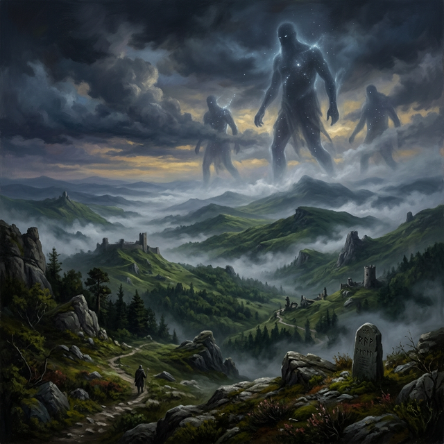

Two Thousand Years of History
1495 DR. Between the bustle of the great cities of Waterdeep and Neverwinter, the LOST HILLS is a hazardous, wild region where the very earth seems to pulse with a fading celestial resonance. Named for its odd paths that twist and tend to leave travelers astray, it is a land settled on the northwestern edge of Faerun, where rolling grasslands tumble beneath ridges of stone that reach for the heavens.
It is a frontier that does not favor the weak. Amongst the ruins of ancient dwarven holds and elven palaces, the weight of the Veil Accord is felt in every shadow. The settlements of Leilon and Phandalin stand as some of the last defenses against a wilderness that seeks to consume all, governed by mayors and merchants whose influence rarely extends beyond their own city walls.
But here, the wilderness is more than just trees and monsters—it is the grave of the gods themselves.
The Lost Hills region lies at the center of the Divine Battleground. When the pantheons fell, fragments of their celestial realms crashed into the landscape, reshaping the terrain into mountains, ruined temples, and unstable magical zones.
Over the past two thousand years the region has transformed into one of the most mythically significant places in the world. Early civilizations believed the land itself was cursed. Strange phenomena occurred frequently: glowing storms, celestial ruins appearing overnight, and creatures twisted by divine energy.
Gradually settlements formed around these sites. Leilon became a haven for scholars and priests seeking to understand the divine fall. Phandalin rose as a frontier city where mortals reclaimed independence from divine authority. Southkrypt formed among ancient ruins where fragments of divine power still linger.
Major Historical Eras
- The Era of Falling Stars — The first centuries after the divine fall when celestial fragments rained across the world.
- The Age of Forgotten Kingdoms — Mortal civilizations rose among divine ruins.
- The Veiled Age — The current era where gods walk secretly among mortals.
Today the Lost Hills remain one of the most unstable magical regions in the world, filled with ancient relics and hidden divine presences.